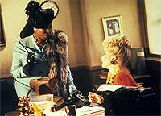
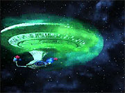
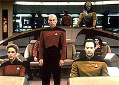
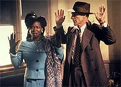

|
MANCHETE
DO EPISDIO
Sensacional
clima de mistrio tem final
extremamente coerente, mas simplista
Episdio
anterior | Prximo
episdio
Sinopse:
Data Estelar: 44502.7.
Quando a Enterprise est rumando para um misterioso planeta
classe-M a fim de fazer investigaes, uma fenda espacial aparece
subitamente no caminho da nave, e a passagem da nave por ele faz com
que todos a bordo fiquem inconscientes.
 Quando
a tripulao acorda, Data (o nico a bordo no-afetado pela
fenda) conta que apenas 30 segundos passaram desde o encontro com o
fenmeno. Porm, evidncias do conta de que a tripulao
esteve muito mais do que 30 segundos desacordada --eles estiveram na
verdade desmaiados por um dia inteiro.
Picard comea a preparar uma investigao e descobre que Data est
intencionalmente omitindo informaes cruciais sobre o que
aconteceu. Enquanto tenta descobrir o que h de errado com o andride,
o capito ordena a volta da nave ao planeta Classe-M.
Chegando l, a nave atacada por uma forma de energia, e um aliengena
energtico acaba tomando o corpo da conselheira Troi. Ela e Data vo
ponte, quando a verdade revelada. Aps o desmaio de toda a
tripulao, apenas Data teria ficado consciente para entrar em
contato com as formas aliengenas. Elas ameaavam destruir a
Enterprise, pelo fato de a nave ter descoberto o local de sua existncia,
algo que queriam a todo custo manter em segredo.
 Picard,
junto com os outros, revivido por Data e chega a um acordo com as
criaturas, decidindo por executar um procedimento em que todas as
memrias da tripulao fossem apagadas, preservando o segredo dos
aliengenas. Apenas Data no seria afetado, mas, para contentar as
criaturas, o capito d a ele ordens para jamais revelar a verdade
a qualquer pessoa.
Infelizmente, quando o plano foi executado, nem todas as pistas que
apontavam para o mistrio foram apagadas, fazendo com que Picard e
sua tripulao, aps acordar, desconfiassem dos eventos e
voltassem a investigar o planeta, "redescobrindo" as
criaturas.
Mais uma vez, elas aceitam repetir o procedimento. S que agora a
tripulao se compromente a eliminar todas as pistas antes
deixadas que poderiam levar a uma nova investigao. O plano
funciona e apenas Data permanece ciente dos eventos.
Comentrios:
Embora apresente
uma soluo um pouco simplista, "Clues" retrata
uma grande histria de mistrio, capaz de intrigar o telespectador
at o ltimo instante. Mais importante ainda, o episdio consegue
manter a audincia totalmente no escuro por um longo perodo de
tempo --um verdadeiro desafio.
Felizmente, para obter esse resultado, no foi preciso apelar para
nada muito inacreditvel --um recurso que muito utilizado, por
exemplo, nas novelas "globais", em que o final pretende
surpreender o telespectador com algumas revelaes cultivadas ao
longo da histria, mas que coloca esse objetivo de surpreender
acima da continuidade, muitas vezes rompendo de forma irremedivel
com a coerncia.
"Clues" no apela para isso. Depois que a histria est
resolvida, nada resta a no ser observar, com uma expresso
perplexa, como tudo se encaixa perfeitamente. Uma bela histria,
sem dvida.
Um exemplo para demonstrar esse efeito relembrar o salto que a
audincia d entre achar que Data foi de alguma forma modificado
para depois descobrir que na verdade todos os outros foram
modificados, menos ele! Isso mostra o quanto comeamos com uma histria
e terminamos com outra totalmente diferente, mas ainda assim compatvel
com todos os elementos previamente apresentados.
 Se
como narrativa, o roteiro funciona maravilhosamente, conduzindo o
telespectador pelo mistrio proposto, como enredo em si, o final
deixa um pouco a desejar. particularmente "forada" a
atitude dos aliengenas de dar Enterprise uma segunda chance,
sob o pretexto de que os humanos seriam uma raa incomum e
interessante. Muito conveniente.
Tambm incomoda um pouco a possesso de Deanna Troi por uma
entidade aliengena, por dois motivos. Primeiro porque lembra muito
um dos piores episdios da terceira temporada da Srie Clssica,
"The Lights of Zetar". A triste lembrana vem no
s pelo contexto, mas at pelos efeitos visuais, muito similares
aos aplicados no episdio clssico.
E segundo, porque esta a nica utilidade de Troi no enredo.
Faltou explicar ao menos as causas para os aliengenas terem
escolhido a conselheira como veculo de comunicao, dando a ela
um maior senso de propsito.
 Em
compensao, alguns elementos --meros detalhes-- do sabor
especial trama, como mais uma cativante apario de Picard na
pele de Dixon Hill, envolvendo a apresentao do cenrio a Guinan.
o tipo de saudao evoluo dos personagens e
continuidade da prpria srie que valoriza ainda mais o produto
final.
Os efeitos especiais esto bonitos, mostrando o que se tornaria uma
tendncia de Jornada nas Estrelas ao longo dos ltimos anos
--recriar o espao cheio de nebulosas, em vez de utilizar o j
tradicional fundo preto com estrelinhas, que funcionou to bem nas
dcadas anteriores. Usar o recurso uma vez ou outra s traz
detalhes visuais interessantes. Por outro lado, quando se abusa da
estratgia (como feito em Babylon 5 e, em menor medida, em Voyager),
a esttica d lugar sensao de "deja vu".
Os personagens principais esto muito bem, especialmente Picard, o
fio condutor da histria, por meio de sua incessante perseguio
verdade, e Data, que mantm-se fiel caracterizao
original, mesmo tendo mentido e omitido inmeras ocorrncias.
Agora, impresso minha ou Picard parece ter, no final das
contas, guardado lembrana dos eventos anteriores, mostrando que o
procedimento de apagamento da memria no teria funcionado to
bem quanto deveria?
Citaes:
La Forge - "Now,
this won't hurt a bit."
("Isso no vai doer nem um pouquinho.")
Data - "Have you forgotten, Geordi, that my sensory inputs
are not programmed to experience pain?"
("Voc esqueceu, Geordi, que meus inputs sensoriais no so
programados para experimentar dor?")
Trivia:
 Dixon Hill, o detetive hologrfico
interpretado por Picard volta a aperecer neste episdio, aps sua
ltima participao na srie no episdio "Manhunt",
da segunda temporada. Dixon Hill ainda seria visto no filme de
cinema "Jornada nas Estrelas - Primeiro Contato".
Sua secretria Madeline, intepretada novamente por Rhonda Aldrich,
tambm aparece aqui.
Dixon Hill, o detetive hologrfico
interpretado por Picard volta a aperecer neste episdio, aps sua
ltima participao na srie no episdio "Manhunt",
da segunda temporada. Dixon Hill ainda seria visto no filme de
cinema "Jornada nas Estrelas - Primeiro Contato".
Sua secretria Madeline, intepretada novamente por Rhonda Aldrich,
tambm aparece aqui.
Fendas
espaciais (wormholes, em ingls), ou "buracos-de-verme",
so comuns em Jornada. H aparies destes fenmenos
espaciais em "Jornada nas Estrelas - O Filme", na srie
de TV Deep Space Nine, em "The Price", um
divertido episdio da Nova Gerao, e em "Eye of
the Neddle", do primeiro ano de Voyager.
Ficha
tcnica:
Histria de Bruce D.
Arthurs
Roteiro de Bruce D. Arthurs e Joe Menosky
Direo de Les Landau
Exibido em 11/02/1991
Produo: 088
Elenco:
Patrick Stewart como
Jean-Luc Picard
Jonathan Frakes como William Thomas Riker
Brent Spiner como Data
LeVar Burton como Geordi La Forge
Michael Dorn como Worf
Gates McFadden como Beverly Crusher
Marina Sirtis como Deanna Troi
Elenco convidado:
Colm Meaney
como Miles Edward O'Brien
Pamela Wislow como alferes McKight
Rhonda Aldrich como Madeline
Whoopi Goldberg como Guinan
Patti Yasutake como enfermeira Alyssa Ogawa
Thomas Knickerbocker como Gunman
Episdio
anterior | Prximo
episdio
|